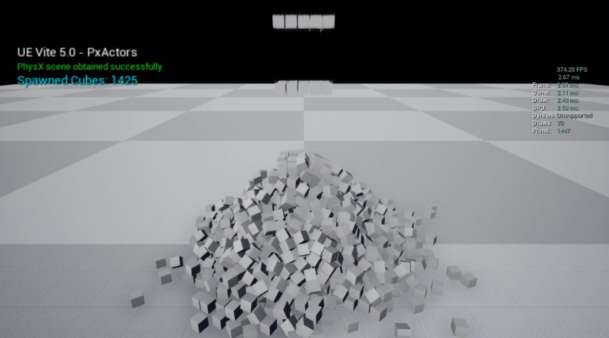
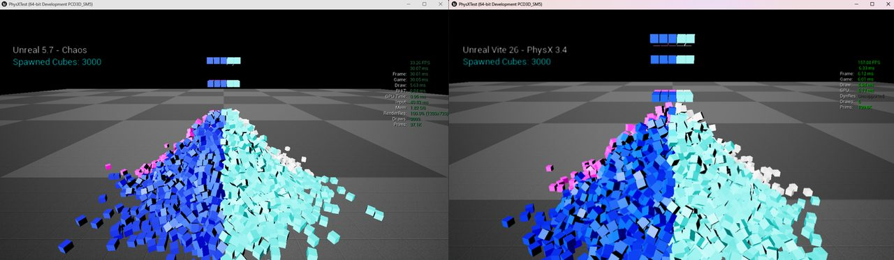
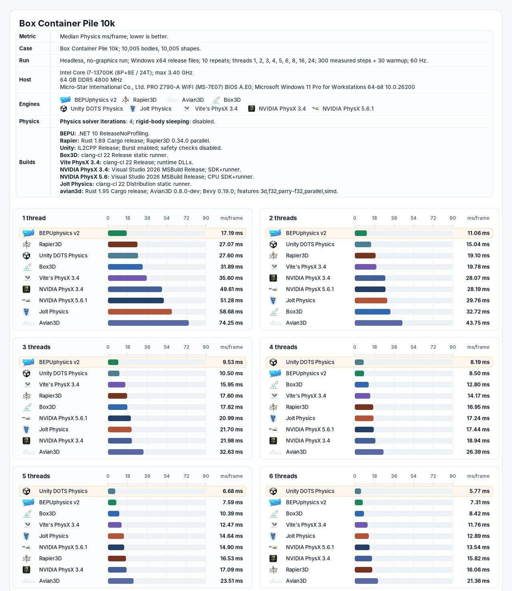

ViteX Physics · 物理 SDK
フレームに遅れない、ゲームのための物理。
ViteX Physics は、Unreal Engine 4 と完全に互換の独自の物理 SDK です。PhysX 4 と 5 のソルバーの進歩を取り入れてゲームの負荷向けに調整し、NVIDIA Flex と Flow による GPU で高速化した流体、布、ロープ、煙、炎を加えます。

互換性
Unreal Engine 4 のコンテンツにそのまま使える物理の層。
ViteX は Unreal Engine 4 の物理の API を維持します。ボディのインスタンス、物理マテリアル、物理アセット、コリジョンのプロファイル、コンストレイント、シーンのクエリ、ラグドール、車両です。既存のゲームプレイのコード、ブループリント、コンテンツは、物理のための移植なしにその上で動きます。
これは UE5 の道とは正反対です。 UE5 で Chaos に移るということは、プロジェクトのあらゆる物理のやり取りを検証し直し、より遅いソルバーを受け入れることを意味します。

計測結果
Chaos より速く、標準の PhysX より速い。
Box Container Pile のベンチマークは、起きている 10,005 個の剛体を描画なしで動かすため、レンダラーではなくソルバーを計測します。どの SDK も、同じ Intel Core i7-13700K のホストで、ソルバーの反復 4 回、60 Hz のステップ、30 ステップのウォームアップの後の 300 ステップを計測します。
Vite の PhysX のビルドは、3 スレッドで 60 Hz の予算 16.67 ms に収まります。標準の PhysX 3.4 は 6 スレッドが必要です。Chaos は 24 スレッドでも収まりません。
ソルバーのスループット（ステップ/秒）

機能
ゲームプレイには CPU の剛体。エフェクトには GPU のシミュレーション。
ゲーム向けに調整したソルバー
PhysX 4 と 5 のソルバーとコリジョンの進歩を、オフラインの正確さではなくゲームの負荷に合わせて選び、調整しています。
UE4 互換の API
ボディのインスタンス、物理アセット、コンストレイント、車両、シーンのクエリが、Unreal Engine 4 のコンテンツが期待するとおりに振る舞います。
GPU の Flex
流体、破れる布、ロープのための統一されたパーティクルシミュレーション。流体の表面の描画は 4.27 のレンダラーに統合します。
GPU の Flow
シーンに反応する炎と煙のための、疎なグリッドによるボリュメトリックなシミュレーション。
破壊
既存のアセットには APEX Destruction を、大規模な結合グラフによる破砕には NVIDIA Blast を。
固定タイムステップ
描画のフレームレートに依存しない一定のシミュレーションのステップと描画の補間で、安定し再現できるプレイを実現します。
規模
数千のボディのための、インスタンス化サブシステムとネイティブのアクターの経路。1,425 個のネイティブのアクターがエンジン内で 374 FPS で動作します。
コンソール向けに調整したカーネル
ホットなループは FMA で融合した SoA で、256 ビットの FMA パイプが 1 本の PS5 クラスの Zen 2 で計測しています。

提供状況
基盤の大部分はすでに出荷しています。
| Vite で出荷中 | Vite の PhysX 3.4、APEX Destruction と Cloth、NVIDIA Blast、固定タイムステップのシミュレーション、インスタンス化物理のサブシステムとネイティブのアクターの経路 |
|---|---|
| 統合中 | NVIDIA Flex の流体、破れる布、ロープ。NVIDIA Flow の炎と煙 |
| 開発中 | PhysX 4 と 5 の改良を取り入れた ViteX のソルバー |
| プラットフォーム | 現在は Windows と Linux。PhysX のライブラリは NDK の Clang で Android 向けにもビルドできます |
さらに読む